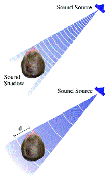

| systems |
| home page |
| Users- The Benefits of XP- States Confront Gates with Modular Windows . - Microsoft Releases XP PowerToys Update Click here. - Program Installation In User AccountsHave I been conned or am . This Month in Dr eXPert - 10 user limit workaround - Monitor double-vision - Moviemaker Video-CD authoring This site is currently testing WebTrends Live. . |
|  |